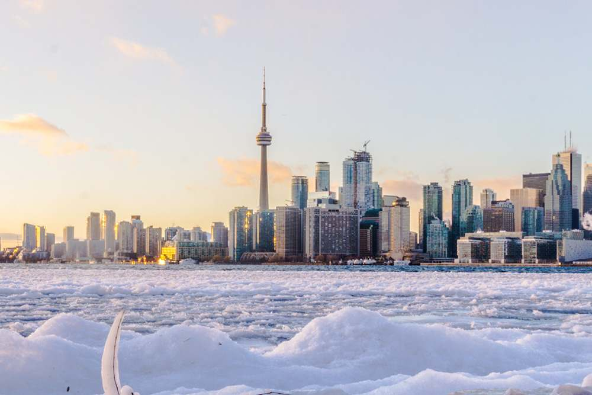

Thursday · 24 December
Day 1 — Montréal
Depart Mississauga after lunch, settle in, then explore Old Montréal and the Old Port.
Full day details ↗Start in Mississauga, spend two nights in Québec City after Montréal, enjoy Alight at Night in Morrisburg, then finish in Toronto—with an optional Niagara extension.
Depart Mississauga after lunch, settle in, then explore Old Montréal and the Old Port.
Full day details ↗
Travel onward and spend Christmas evening around Petit-Champlain, Place Royale and Dufferin Terrace.
Full day details ↗
Visit Montmorency Falls and consider a short Jacques-Cartier National Park visit if conditions allow.
Full day details ↗
Drive to Upper Canada Village for the illuminated heritage setting, then continue to Ottawa.
Full day details ↗
Head to downtown Toronto and the CN Tower before returning to Mississauga or extending to Niagara.
Full day details ↗